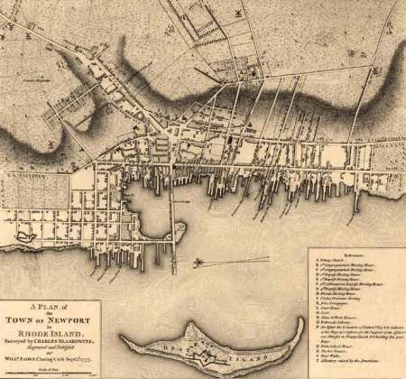
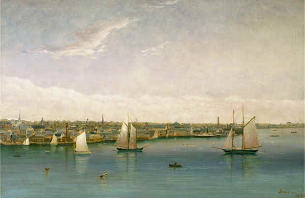
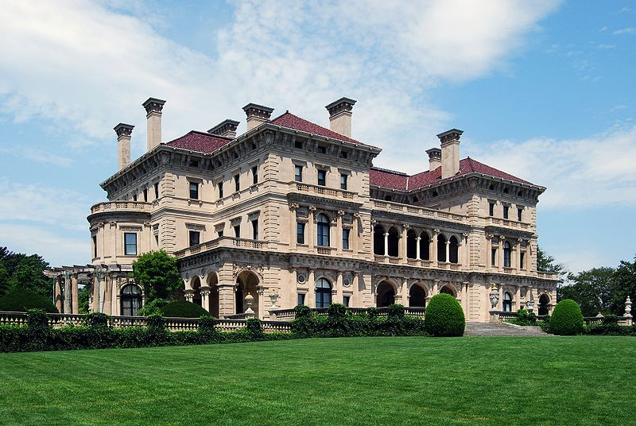

|
Though it was only the 88th largest city in the United States at the start of the Civil
War, Newport was nonetheless well known to Americans of the antebellum era. After
suffering an economic freefall in the post revolution years, followed by a short lived
resurgence, Newport found its niche as the posh summering destination of choice for
nineteenth century America's political, economic, and intellectual elite.
Newport is the largest city on Aquidneck Island in Narragansett Bay, and is located 30
miles south of the state capital of Providence. Its founding dates back to 1690, after a
political fallout with Rhode Island founder Anne Hutchinson forced some residents of
|

A map of Newport in 1777
|
nearby Portsmouth to establish their own community. Soon thereafter, Newport developed
into the most important colonial port in Rhode Island. The city's economy boomed up until
the Revolutionary War, when it was occupied by the British and its trade routes dried up.
Newport's status as a bustling maritime city diminished, and much of the city was
abandoned until the British departed in 1780.
When the Constitution was signed in 1787, many Rhode Islanders were opposed to
ratifying the document. The people of Newport did not share in this view, however, and
were eager to join the new republic in hopes of being reimbursed for their wartime debts.
The city's leaders threatened to secede from the state and to seek independent recognition
of the Constitution if Rhode Island did not join the Union. The threat worked, and in
1791 the state became the thirteenth to join the United States of America.
For a brief period after the adoption of the Constitution, Newport's shipping industry
experienced a resurgence, as ships began exporting products overseas and returning with
extravagant goods from the Far East. Commerce in the city and its neighboring communities
|

Newport's harbor 1850
|
flourished and the need for merchant vessels helped revive the local shipbuilding
industry. Newport ships also participated in whaling, and in the slave trade. In the
1820s and 1830s, however, Newport's shipping declined once again. A shift to
petroleum-based fuels wiped out the market for whale oil, while the abolition of slavery
in Rhode Island ended the slave trade. At the same time, the rise of domestic
manufacturing eliminated the need for many imports, and so Newport's trade with foreign
markets declined dramatically.
By the 1850s, Newport had shifted from a mercantile to a resort-based economy.
Newport's first large hotels, the Ocean House and the Atlantic House, were established in
1840 and 1844, respectively. The establishment of these and other hotels and boarding
houses provided economic relief when other industries in the city regressed. During the
summer months, which are relatively temperate in Newport, prominent Northerners and
Southerners fled to the city to escape the oppressive heat and epidemics of disease in
their hometowns. The list of famous visitors who summered in Newport includes Henry
|

"The Breakers," in Newport, belonged to the Vanderbilts,
perhaps antebellum America's richest family. It remains one of the United States'
most famous residences.
|
Wadsworth Longfellow, Robert Louis Stevenson, George Bancroft, Thomas Wentworth Higginson,
John Singer Sargent, and William Morris Hunt.
The fighting in the Civil War never got so far north as Newport, but the city
nonetheless made several important contributions to the Union war effort. Most notably,
the United States Naval Academy relocated there for the duration of the conflict, its
administrators concerned about the risks posed by Confederate sympathizers in the
Academy's normal hometown of Baltimore. Troops from Newport served with distinction in
nearly two dozen battles, including Shiloh, Chattanooga, Chickamauga, Murfreesboro, and
Atlanta. The city also produced ships for the Union Navy, most importantly the USS
Rhode Island.
After regional tensions ceased, Newport reemerged during the Gilded Age as a vacation
destination for America's elite, garnering international recognition for the construction
of its impressive Victorian mansions, primarily in the northern portion of the town. At
the same time, the city became a popular destination for Irish immigrants, who developed s
thriving community centered in the southern portion of the town. Both of these
elements—the opulence of northern Newport and the Irish heritage of southern
Newport—remain important parts of the city's identity to the present day.
Source: Christopher Bates for the History 139A website.
|